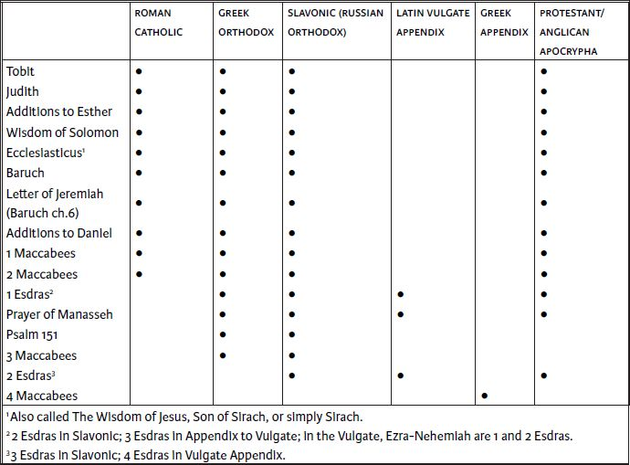

Introduction
Definitions
The Apocryphal/Deuterocanonical books are those works that were included in the Septuagint (the ancient Greek translation of the Hebrew Bible, abbreviated LXX) or in the Old Latin and Vulgate translations, but are not included in the Hebrew text that forms both the canon for Judaism and the Protestant Old Testament. All of these works, whether they are individual books or additions to the Hebrew texts of Esther and Daniel, have been regarded as canonical by one or more Christian communities, but not by all. (The exception is 4 Maccabees, which appears only in an appendix to the Greek Bible.)
“Apocrypha” means “hidden things,” but it is not clear why the term was chosen to describe these books. In antiquity “hidden books” sometimes referred to books that were restricted because they contained mysterious or esoteric teaching, too profound to be communicated to any except the initiated (see 2 Esd 14.45–46). Some early Christian writers used the term to describe works they considered to be spurious or heretical. But neither usage aptly describes the set of books that now goes by this name. The use of the term to refer to this group of books can be traced to the Christian scholar Jerome at the turn of the fifth century ce. It serves to distinguish them from books of the Christian Old Testament that are also found in the Jewish canon.
“Deuterocanonical,” along with its coordinate term “protocanonical,” is used in Roman Catholic tradition to describe the status of the two groups of books of the Old Testament. The “protocanon” consists of the books of the Hebrew Bible, concerning which there was no debate as to their canonical status. The “Deuterocanon” refers to those additional books whose canonical status was reaffirmed at a later date. This distinction, introduced by Sixtus of Sienna in 1566, acknowledges the differences between the two categories while making clear that Roman Catholics accept as fully canonical those books and parts of books that Protestants call the Apocrypha (except the Prayer of Manasseh, Psalm 151, 3 and 4 Maccabees, and 1 and 2 Esdras, which both groups regard as apocryphal). Thus, although the terms “Deuterocanonical” and “Apocryphal” can describe the same collections of writings, they clearly indicate the difference in status of the writings among different groups. In the NRSV translation, subheadings in the table of contents for these books, and in the text itself, explain the differing canonical status of various writings.
The Roman Catholic, Orthodox, and Protestant Canons of the Old Testament
Toward the end of the fourth century ce, Pope Damasus commissioned Jerome, the most learned Christian biblical scholar of his day, to prepare a standard Latin version of the scriptures (the translation that was to become known as the Latin Vulgate). In the Old Testament Jerome followed the Hebrew canon; though he also translated the apocryphal books, he called attention to their distinct status in prefaces. Subsequent copyists of the Latin Bible, however, did not always include Jerome's prefaces, and during the medieval period the Western Church generally regarded these books as scripture, without differentiation. After the Protestant reformers had denied the canonical status of these books, in 1546 the Council of Trent decreed that the canon of the Old Testament includes them (with the exceptions listed earlier). Subsequent editions of the Latin Vulgate text, officially approved by the Roman Catholic Church, placed these books within the Christian sequence of the Old Testament books. Thus Tobit and Judith come after Nehemiah; the Wisdom of Solomon and Ecclesiasticus (Sirach) come after the Song of Solomon; Baruch (with the Letter of Jeremiah as ch 6) comes after Lamentations; and 1 and 2 Maccabees conclude the books of the Old Testament. Esther is given in its longer (Greek) form rather than in the version based solely on the Hebrew text; the Prayer of Azariah and Song of the Three Jews appear as vv. 24–90 of ch 3 of Daniel, and the stories of Susanna and Bel and the Dragon as chs 13 and 14 of Daniel. An appendix after the New Testament contains the Prayer of Manasseh and 1 and 2 Esdras, without implying canonical status.
The Eastern Orthodox Churches recognize several other books as authoritative. Editions of the Old Testament approved by the Holy Synod of the Greek Orthodox Church contain, besides the Roman Catholic Deuterocanonical books, 1 Esdras, Psalm 151, the Prayer of Manasseh, and 3 Maccabees, while 4 Maccabees appears in an appendix. Slavonic Bibles approved by the Russian Orthodox Church contain, besides the Deuterocanonical books, 1 and 2 Esdras (called 2 and 3 Esdras), Psalm 151, and 3 Maccabees.
Protestant Bibles have followed the Hebrew canon, though in a different order. The disputed books, if they are included at all, have generally been placed in a separate section, usually bound between the Old and New Testaments, but occasionally placed after the close of the New Testament.
Here is a list of the Apocryphal/Deuterocanonical books in the order in which they are found in this Bible, showing which religious communities accept them as scripture:

The Status of the Apocryphal/Deuterocanonical Books in Christianity
During the first centuries of the Common Era, early Christian writers (most of whom knew no Hebrew) quoted, in Greek, passages both from books in the Hebrew canon and from these additional works without making any distinction between them. Such citations were usually preceded by a word or phrase making it clear that the writer regarded the text being cited as canonical. During this time, only a few thinkers investigated the Jewish canon or distinguished between, for instance, the Hebrew text of Daniel and the addition of the story of Susanna in the Greek version.
By the fourth century, theologians in the Eastern (Greek) churches had begun to recognize a distinction between the books in the Hebrew canon and the rest, though they continued to cite all of them as scripture. During the following centuries the matter was debated and, consequently, practice varied in the East, but at the Synod of Jerusalem in 1672 (which expressed the Orthodox churches’ reaction to the Protestant Reformation), Tobit, Judith, Ecclesiasticus (Sirach), Wisdom, Additions to Daniel, and 1 and 2 Maccabees were expressly designated as canonical. ʿPIʾ In the Western (Latin) church, on the other hand, though there was some variety of opinion, in general theologians regarded these books as canonical. More than one local synodical council (e.g., Hippo, 393, and Carthage, 397 and 419) justified and authorized their use as scripture. The so-called Decretum Gelasianum, a Latin document probably dating to the sixth century, contains lists of the books to be read as scripture and of books to be avoided as apocryphal. The former list, which is not present in all the manuscripts, includes among the biblical books Tobit, Judith, Wisdom, Ecclesiasticus (Sirach), and 1 and 2 Maccabees.
Occasionally, however, writers questioned the status of these books. Jerome, near the end of the fourth century, thought that books not in the Hebrew canon should be designated as apocryphal, and other thinkers, though always a minority, followed his view, at least theoretically. Toward the close of the fourteenth century John Wycliffe and his disciples produced the first English version of the Bible. This translation of the Latin Vulgate included all of the disputed books, with the exception of 2 Esdras. In the Prologue to the Old Testament, however, it makes a distinction between the books of the Hebrew canon, listed there, and the others which, the writer says, “shall be set among apocrypha, that is, without authority of belief.” In the books of Esther and Daniel, the translators included a rendering of Jerome's notes calling the reader's attention to the additions.
At the time of the Reformation, Protestant thinkers came to the conclusion fairly early that they would need to determine which books were authoritative for the establishment of doctrine and which were not. For instance, disputes over the doctrine of purgatory and of the usefulness of prayers and masses for the dead involved the authority of 2 Maccabees, which contains what was held to be scriptural warrant for them (12.43–45). The first extensive Protestant discussion of the canon was Andreas Bodenstein's treatise De Canonicis Scripturis Libellus (1520). Bodenstein (or Carlstadt, after his place of birth) distinguished the books of the Hebrew Bible from the books of the Apocrypha, classifying the Apocrypha into two divisions. Concerning Wisdom, Ecclesiasticus (Sirach), Judith, Tobit, and 1 and 2 Maccabees, he says, “These are Apocrypha, that is, are outside the Hebrew canon; yet they are holy writings” (sect. 114). He continues:
What they contain is not to be despised at once; still it is not right that Christians should relieve, much less slake, their thirst with them…. Before all things the best books must be read, that is, those that are canonical beyond all controversy; afterwards, if one has the time, it is allowed to peruse the controverted books, provided that you have the set purpose of comparing and collating the non-canonical books with those which are truly canonical (sect. 118).
The second group, 1 and 2 Esdras, Baruch, Prayer of Manasseh, and the Additions to Daniel, he declared without worth.
The first Bible in a modern vernacular language to segregate the apocryphal books from the others was the Dutch Bible published by Jacob van Liesveldt in 1526 at Antwerp. After Malachi there follows a section embodying the Apocrypha titled “The books which are not in the canon, that is to say, which one does not find among the Jews in the Hebrew.”
The first edition of the Swiss-German Bible was published in six volumes (Zurich, 1527–29), the fifth of which contains the Apocrypha. The title page of this volume states, “These are the books which are not reckoned as biblical by the ancients, nor are found among the Hebrews.” A one-volume edition of the Zurich Bible, which appeared in 1530, contains the apocryphal books grouped together after the New Testament. One Swiss reformer, Oecolampadius, declared in 1530: “We do not despise Judith, Tobit, Ecclesiasticus, Baruch, the last two books of Esdras, the three books of Maccabees, the Additions to Daniel; but we do not allow them divine authority with the others.”
In reaction to Protestant criticism of the disputed books, in 1546 the Council of Trent gave what is regarded by Roman Catholics as the definitive declaration on the canon of the scriptures. After enumerating the books, which in the Old Testament include Tobit, Judith, Wisdom, Ecclesiasticus (Sirach), Baruch, and the two books of Maccabees, the decree pronounces an anathema upon anyone who “does not accept as sacred and canonical the aforesaid books in their entirety and with all their parts, as they have been accustomed to be read in the Catholic Church and as they are contained in the old Latin Vulgate Edition” (trans. H. J. Schroeder). The reference to “books in their entirety and with all their parts” is intended to cover the Letter of Jeremiah as ch 6 of Baruch, the Additions to Esther, and the chapters in Daniel including the Prayer of Azariah, the Song of the Three Jews, Susanna, and Bel and the Dragon. It is noteworthy, however, that the Prayer of Manasseh and 1 and 2 Esdras, although included in some manuscripts of the Latin Vulgate, were denied canonical status by the Council of Trent. In the official edition of the Vulgate, published in 1592, these three are printed as an appendix after the New Testament, “lest they should perish altogether.”
In England, even though Protestants were unanimous in declaring that the apocryphal books were not to be used to establish any doctrine, differences arose as to the proper use and place of noncanonical books. A milder view prevailed in the Church of England, and the lectionary attached to the Book of Common Prayer, from 1549 on, has always contained prescribed lessons from the Apocrypha. In addition, portions of the Song of the Three Jews are used as a canticle, or song of praise, alongside selected Psalms in the service of Morning Prayer. In reply to those who urged the discontinuance of reading lessons from apocryphal books as being inconsistent with the sufficiency of scripture, the bishops at the Savoy Conference, held in 1661, replied that the same objection could be raised against the preaching of sermons, and that it was much to be desired that all sermons should give as useful instruction as did the chapters selected from the Apocrypha.
The Puritans took a stricter view, and some Geneva Bibles, printed in 1599 mainly in the Low Countries, excluded the Apocrypha. The omission of the Apocrypha was presumably due to those responsible for binding the copies, since the titles of the apocryphal books occur in the table of contents. During subsequent centuries Bibles that lacked the books of the Apocrypha came to outnumber those that included them, and soon it became difficult to obtain ordinary editions of the King James Version containing the Apocrypha.
(For a more complete account of the formation of the various canons of scripture, see “The Canons of the Bible” on p. 2235.)
The Historical Background to the Apocryphal/Deuterocanonical Books
With the destruction of Jerusalem and the Temple by the Babylonians under Nebuchadnezzar in 586 bce, and the subsequent exile of many Judeans to Babylon, the history of Israel underwent a decisive break. Henceforth there would always be Diaspora Jewish communities outside the land of Israel, and even after the Persian king Cyrus allowed the exiles to return in 538 bce, large communities flourished in Babylon, Egypt, and elsewhere.
For two centuries the Persians controlled the Near East. The rebuilt Temple became the institutional focus of the province of Judah. Although details are uncertain, this era probably saw important work on the editing of the Pentateuch and the prophetic writings, as well as the composition of other literature. The Persian period came to an end when Alexander the Great completed a series of conquests that put him in control of the former Persian empire, including Egypt. When Alexander died in 323, his empire was divided among his generals, and two of them—Seleucus, king of Syria, and Ptolemy, king of Egypt—and their successors fought over the territory of Judah, which fell first under Ptolemaic and then Seleucid control. Despite the political changes, however, the overall cultural influence remained: This was the era of the triumph of Hellenistic culture, including the use of the Greek language as the standard for the whole empire.
There had already been, in the Hebrew Bible, contention about such issues as intermarriage (Ezra 9.1–10.44; Neh 13.23–31). Now, with large numbers of Jews living outside the land as minorities within much larger and more dominant cultures, this issue and that of other religious observances came to be much more important. Stories of faithfully observant Jews among non-Jewish populations (Tobit, 3 Macc) were joined by expanded versions of books that strengthened this point (Greek Esther, the Prayer of Azariah, and Song of the Three Jews in ch 3 of Daniel).
Jews both in the Diaspora and in Judah appropriated many elements of Hellenistic culture, usually without incident. During the second century bce, however, an attempt to establish Hellenistic educational and civic institutions in Jerusalem created a crisis when the persons involved bribed King Antiochus IV Epiphanes (175–164) to appoint Hellenizing high priests (Jason and Menelaus) and funds were taken from the Temple itself to pay the king. In response to the ensuing violence, Antiochus invaded Jerusalem in 169; in 167 he effectively outlawed the Jewish religion, making the teaching of the Torah a crime and establishing polytheistic worship in the Temple. This final provocation led to the ultimately successful Jewish revolt under the Hasmonean family, led by Mattathias and his five sons, one of whom, Judas, was known as Maccabeus, “the hammer.” The revolt and the subsequent establishment of a Jewish government (which took more than twenty years to accomplish) are therefore referred to as Maccabean. This Maccabean (or Hasmonean) rule lasted for eighty years, until because of constant power struggles among the various factions of Jews, the Romans were able to intervene and take direct control of the territory in 63 bce.
Kinds of Literature in the Apocryphal/Deuterocanonical Books
The Apocryphal/Deuterocanonical books contain different literary genres, including histories, historical fiction, wisdom, devotional writings, letters, and an apocalypse. Though several of the books combine more than one of these genres, most of the books can be classified as predominantly one type or another. Thus 1 Esdras, 1 Maccabees, and in a certain sense, 2 Maccabees are histories. First Esdras summarizes 2 Chr 35.1–36.23 and reproduces all of Ezra and Neh 7.38–8.12. Only 1 Esd 3.1–5.6 is a significant addition. First Maccabees recounts the history of the Seleucid persecutions and the rebellion and rise of the Maccabees. Second Maccabees, with its bombastic rhetoric and abundant use of invectives against the Seleucid tyrants and Hellenizing Jews, is an example of a popular Hellenistic genre, the “pathetic history,” which uses highly charged language, exhortation, exaggeration, and other methods to stimulate the imaginations and emotions (“pathos”) of readers. Third Maccabees is misleadingly named: It actually has nothing to do with the Maccabean period or the Seleucid dynasty, but deals with a period a half-century earlier and concerns the sufferings of the Jewish community in Egypt under the Ptolemaic rulers. It is a religious novel, written in Greek by an Alexandrian Jew sometime after 30 bce. Using legendary elements, it tells three stories of conflict between Ptolemy IV (221–204) and the Jewish community in Egypt. The most dramatic section (5.1–6.21) describes Ptolemy's scheme to martyr the Jews: They were to be herded into an arena near Alexandria to be trampled under the feet of five hundred intoxicated elephants. The king's plan was finally foiled when angelic intervention terrorized those supervising the persecutions and also frightened the elephants into turning upon the Egyptian soldiers.
Fourth Maccabees is not a historical narrative but rather a Greek philosophical treatise addressed to Jews on the supremacy of reason over the passions. In the form of a Stoic diatribe, or popular address, it uses narratives of exemplary behavior, and the conversations and arguments of characters in the narratives, to explore philosophical issues. The author begins with a theoretical exposition of his theme, which he then illustrates at length with examples of the martyrs drawn from 2 Maccabees, who preferred death to committing apostasy. The book was probably written by a Hellenistic Jew before 70 ce. In early Christianity the Maccabean martyrs were venerated as saints and eventually accorded a yearly festival in the ecclesiastical calendar (August 1).
Judith, Tobit, Susanna, and Bel and the Dragon are short historical fictions written to convey a moral point, as well as to entertain. Except for Judith, which is set in Judah, the rest are sometimes referred to as “Diaspora novellas” since they are all set in the Jewish Diaspora of Mesopotamia. Yet they differ from one another in other respects. Like the canonical stories of Daniel 1–6, Bel and the Dragon is a court tale, in which the hero's relationship with the king and other members of the court provides the conflict of the plot. The motif of the lion's den, which occurs in Daniel 6, also occurs in the story of the dragon. In contrast to the earlier Daniel tales, however, Bel and the Dragon is preoccupied with the theme of the exposure of idols as false gods and their priests as fraudulent (see also the Letter of Jeremiah). Bel and the Dragon and Susanna are sometimes referred to as ancient examples of the detective story. Whereas Daniel functioned as an interpreter of dreams and visions in Daniel 1–6, in these stories Daniel uses cleverness and logical deduction to uncover deception.
Although Tobit, like Daniel, is presented as a court official of a Mesopotamian king, the story is concerned with personal and family affairs, not a rivalry at court. Thematically, Tobit may be compared with the prose story of Job, since it concerns the suffering of the righteous (both Tobit and his eventual daughter-in-law Sarah). The book of Tobit is distinguished by the use of various folktale motifs (e.g., the motifs of the grateful dead, the angel in disguise, the dangerous bride, and the demon lover), and by its references to Ahikar, the hero of a non-Jewish folktale from Mesopotamia.
Judith might seem to bear comparison with 1 and 2 Maccabees, since it concerns a threat to the people from a foreign army. But whereas 1 and 2 Maccabees are histories, the fictional nature of Judith is evident from the story's flagrant historical inaccuracies, such as describing Nebuchadnezzar as king of Assyria and the invasion as taking place after the people's return from exile. A better comparison might be between Judith and Esther. Though set in Judah rather than in the Diaspora, Judith, like Esther, tells how a courageous Jewish woman saves her people from enemies bent on destroying them.
Wisdom literature is represented in the Apocrypha by two books: the Wisdom of Solomon, and the Wisdom of Jesus son of Sirach (also known as Ecclesiasticus). Sirach, which was originally composed in Hebrew ca. 180 bce, shows particularly close connections with the style and content of the book of Proverbs in the Hebrew Bible, from which it is a natural development. The Wisdom of Solomon, by contrast, contains none of the proverbial material that characterizes the Hebrew wisdom tradition. It does, however, share with Proverbs and Sirach an interest in the figure of wisdom personified as a woman. What makes the Wisdom of Solomon distinctive is the strong influence of Greek literary styles and philosophical ideas. Thus, it comes from the Greek-speaking Diaspora, probably from Alexandria in Egypt.
The Prayer of Manasseh is a hymnic lament of great feeling and literary skill. The Prayer of Azariah and the Song of the Three Jews are both modeled on psalms that are liturgical in form. In addition to the 150 psalms comprising the book of Psalms in the Hebrew Bible, during the Hellenistic and Roman periods similar hymns were composed in Hebrew and in other languages; there are a number of such compositions in the Dead Sea Scrolls. One, which celebrates the prowess of young David in slaying Goliath, is appended (as Ps 151) to the book of Psalms in some Greek and Hebrew manuscripts.
The Hebrew Bible contains no books that are in the form of a letter, although letters or excerpts from letters occur at various places. There are decrees (Ezra 1.1–6), diplomatic correspondence (1 Kings 5.2–6), royal commands (2 Sam 11.14–15), even forgeries (1 Kings 21.8–10), but all are used to advance the narratives in which they occur, or explain incidents that follow, so it is unclear how representative they are. Twenty-one of the twenty-seven books of the New Testament are in the form of letters, but some (for instance, Hebrews) are more like sermons than letters. The Letter of Jeremiah, which dates from the Hellenistic period, may have provided later, Christian writers with an example of how this literary form could be used for religious purposes, combining theological content with a direct personal approach.
Finally, 2 Esdras, a book that purports to reveal the future, belongs to the genre of apocalypse, a word that literally means “an unveiling.” Like the last six chapters of Daniel in the Hebrew Bible and the book of Revelation in the New Testament, which also are apocalypses, 2 Esdras uses metaphorical language, symbolic numbers, and angelic messengers who reveal hidden information.
Despite this diversity of genres, most of which parallel or are developed from similar ones in the Hebrew Bible, there is no correlative to classical prophecy. Even within the prophetic books of the Hebrew Bible, apocalyptic elements had already begun to supplant strict prophecy (for instance, Isa 24–27; Ezek 38–39; Joel 2; Zech 9–14). This absence perhaps supports the view of the late first-century ce historian Josephus (Ag. Ap. 1.8), that “the exact succession of the prophets” had been broken after the Persian period; a similar idea is found in later rabbinic literature. Sometimes there is a direct statement that “prophets ceased to appear” (1 Macc 9.27); at other times the writers express the hope that prophecy might one day return (1 Macc 4.46; 14.41). When a writer imitates prophetic style, as in the book of Baruch, he repeats with slight modifications the language of the older prophets
The Apocryphal/Deuterocanonical Books Within Judaism
Most of the writings in the Apocryphal/Deuterocanonical books (with the exception of parts of 2 Esdras) are Jewish in origin, but it is not clear that they were collected by any particular community of Jews. Some of them (for instance, Sirach) were quoted by rabbis, but for others no evidence exists that they were regarded as central to the Jewish community at any point. Some (Tobit, parts of Sirach, the Letter of Jeremiah, and Psalm 151) are among the Dead Sea Scrolls, and were therefore presumably of importance to the Essene community there, but their canonical status is not clear.
Nevertheless, influences from some of these works are apparent within Judaism. As mentioned above, rabbinic literature quotes and appropriates sayings from Sirach. The martyrdom of the woman and her seven sons (2 Macc 7.1–42; 4 Macc 8.3–18.24) is recounted in several places (Lam. Rab. 1.50; b. Git. 57b; Seder Eliyahu R. 29).
First and Second Maccabees (1 Macc 4.36–59; 2 Macc 10.1–8) provide the original accounts of the purification of the Temple in 164 bce, which is commemorated in the festival of Hanukkah. The Talmudic legend (b. Shabb. 21b) that oil in the Temple, though only enough for one day nevertheless burned for eight—the supposed reason for the eight-day length of the observance—is not found in the books of Maccabees. Judith was, during the Middle Ages, associated with Hanukkah as well, on the grounds that both had to do with rallying an oppressed Jewish population to overthrow a threatening or occupying power.
Both Tobit and 2 Esdras influenced later Jewish literature and were popular during the Middle Ages. Baruch may have been read in synagogues at one time (see Bar 1.14), and Baruch himself, and therefore his writing, were regarded in some rabbinic writings as sharing Jeremiah's prophetic status (Sifre Num. 78; Seder Olam R. 20; b. B. Bat. 14b; y. Sot. 9.12). Susanna's story is recounted in the Babylonian Talmud (b. San. 93a).
The sense of a canon of scripture emerged only gradually in Judaism. During the time in which the Apocryphal/Deuterocanonical books were composed, the Torah (Pentateuch), the Prophets, and possibly the book of Psalms were considered authoritative. Many other writings, both those now in the Jewish canon and additional ones, were widely popular but did not have the status of scripture. A sense of a closed set of authoritative books emerged only in the first century ce, and even then there was some uncertainty about its extent. Josephus, however, says that “there are not with us myriads of books, discordant and discrepant, but only twenty-two, comprising the history of all time, which are justly accredited” (Ag. Ap. 1.43).
Even if these additional writings were not considered scripture, they were often read and cited. Josephus himself makes use of 1 Esdras, 1 Maccabees, and the additions to Esther. Early rabbinic literature, however, makes no mention of any of these books except for Sirach, which is frequently quoted. The rabbis were, however, aware of the festival of Hanukkah, which is described in 1 and 2 Maccabees. During the Middle Ages, Jews became reacquainted with some of the Apocryphal/Deuterocanonical works from Christian sources and retranslated Tobit and Judith into Hebrew. The entire Apocrypha/Deuterocanon was translated into Hebrew in the early sixteenth century.
New Testament Uses of the Apocryphal/Deuterocanonical Books
None of the books of the New Testament quotes directly from any Apocryphal book, in contrast to the frequent quotation of the thirty-nine books in the Hebrew Bible. Several New Testament writers, however, do allude to one or more apocryphal books. For example, what seem to be literary echoes from the Wisdom of Solomon are present in Paul's Letter to the Romans (cf. Rom 1.20–29 with Wis 13.5,8; 14.24,27; and Rom 9.20–23 with Wis 12.12,20; 15.7) and in his correspondence with the Corinthians (cf. 2 Cor 5.1,4; with Wis 9.15). The short Letter of James, a typical bit of “wisdom literature” in the New Testament, contains allusions not only to the book of Proverbs in the Hebrew Bible but to gnomic sayings in Sirach as well (cf. Jas 1.19 with Sir 5.11; and Jas 1.13 with Sir 15.11–12).
The Further Influence of the Apocryphal/Deuterocanonical Books
The influence of the Apocrypha has been widespread, inspiring homilies, meditations, and liturgical forms, and providing subjects for poets, dramatists, composers, and artists. Some common expressions and proverbs have come from the Apocrypha. The sayings, “A good name endures forever” and “You can't touch pitch without being defiled,” are derived from Sir 41.13 and 13.1. The affirmation in 1 Esd 4.41, “Great is Truth, and mighty above all things” (KJV), or its Latin form, “Magna est veritas et praevalet,” has been used as a motto or maxim in a wide variety of contexts.
The importance of these books extends to the information they supply concerning the development of Jewish life and thought just prior to the beginning of the Common Era. The stirring political fortunes of the Jews in the time of the Maccabees; the rise of what has been called normative Judaism, and the emergence of the sects of the Pharisees and the Sadducees; the lush growth of popular belief in the activities of angels and demons, and the use of magic to drive away malevolent influences; the first reflections on “original sin” and its relation to the “evil inclination” present in every person; the blossoming of apocalyptic hopes relating to the messiah, the resurrection of the body, and the vindication of the righteous—all these and many other topics are to be found in the Apocryphal/Deuterocanonical books.
Carol A. Newsom